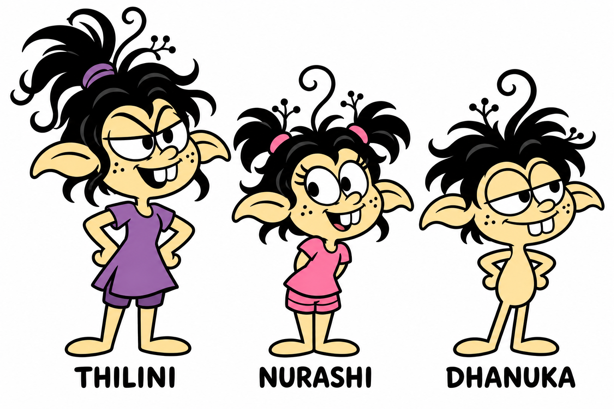
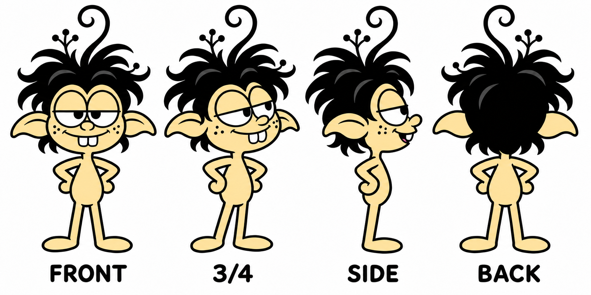
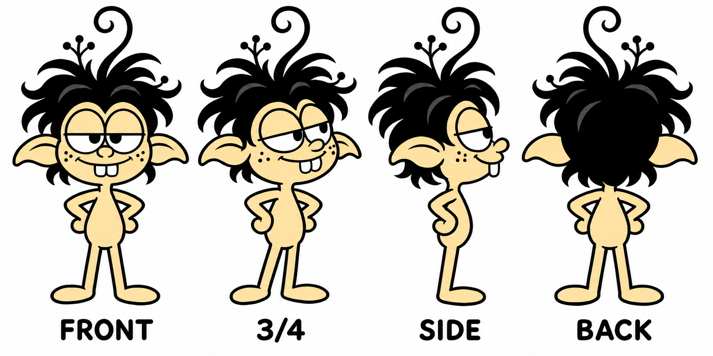
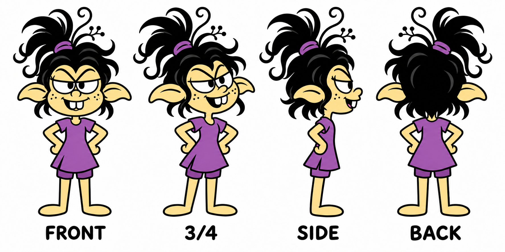
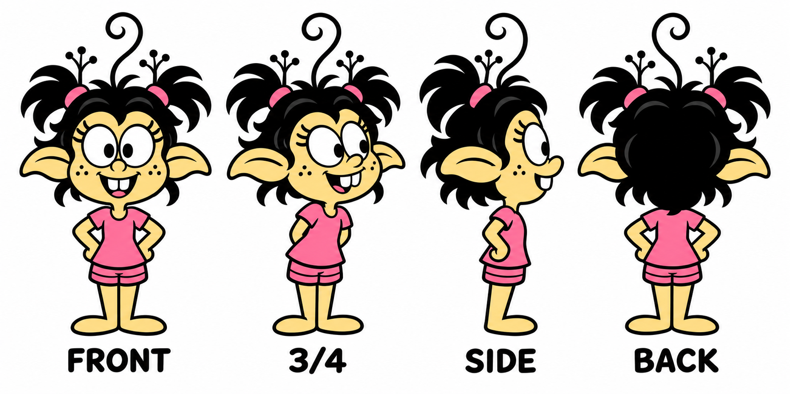

TND · Character views
මුලින් පෙනුම් පරීක්ෂා කරමු: Front → ¾ → Side → Back.
Draft designs for review. New side and back views are inferred from your original reference and need your approval.
Compare with original reference

Dhanuka · Open mouth · Approved v4

Dhanuka · Closed mouth · Approved v6
කට වැසුණු Side පෙනුම — දතේ අග ටිකක් පහළින් පෙනෙන විදිහ.

Thilini · Approved v2

Nurashi · Draft v1

Check hair, face, ears, teeth, clothes, body proportions and consistent height across views. These sheets are not animation rigs and do not replace the existing editor artwork.
← TND Studio